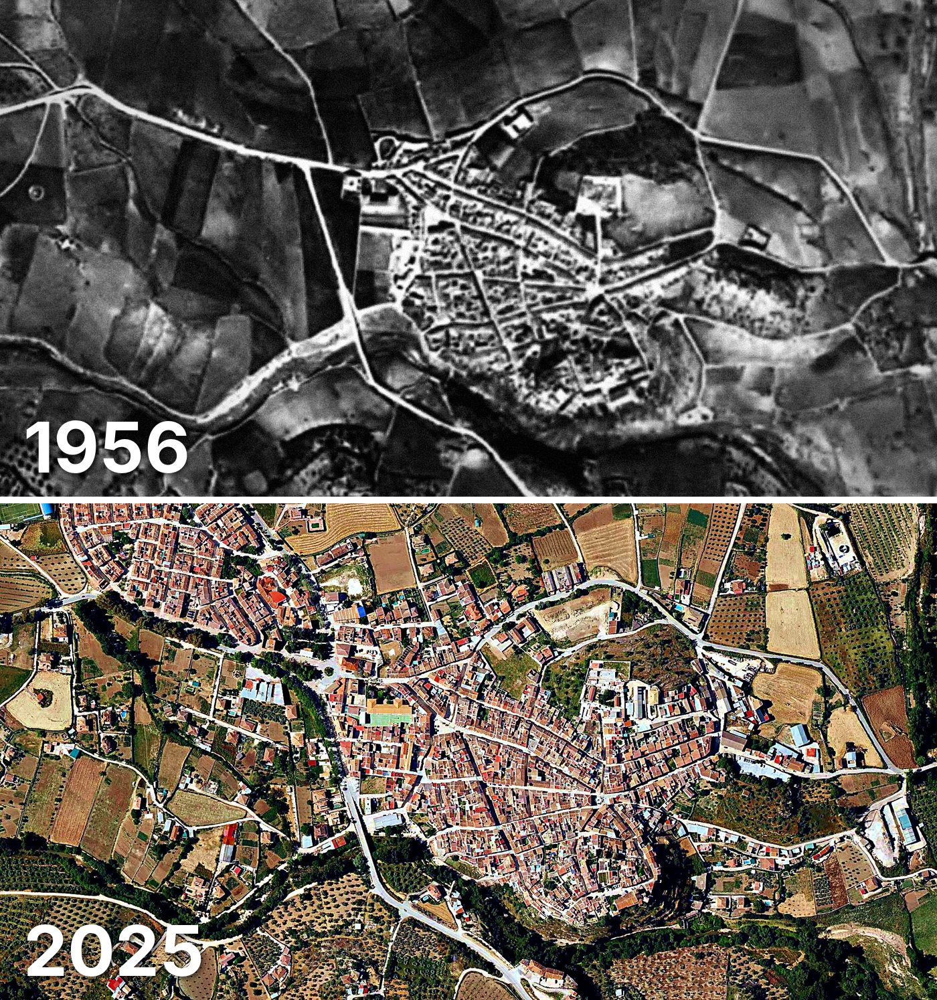

El Burgo
El Burgo tiene 1.042 edificios y 1.132 viviendas, y 1.761 habitantes en 2025. La mitad de sus edificios es de 1976 o posterior.
Cuándo se construyeron sus edificios
Desde 2015 se han terminado 10 edificios.

Las calles de El Burgo con más viviendas
- Calle Nueva · 68 viviendas
- Calle Málaga · 56 viviendas
- Calle Real Comandante Benítez · 53 viviendas
- Calle Mesones · 46 viviendas
- Calle la Calzada · 44 viviendas
- Calle los Escaloncitos · 41 viviendas
- Calle Pocaharina · 36 viviendas
- Plaza la Villa · 30 viviendas
- Calle Enmedio · 29 viviendas
- Calle Parras · 29 viviendas
Toda la información de El Burgo en CASAS.ES →
Fotos de El Burgo para publicar
Estas fotos aéreas de El Burgo, de 1956 y de 2025, se pueden publicar gratis en un periódico, un blog, la web del ayuntamiento o las redes, citando la fuente como se indica debajo.

Descargar: las dos juntas · 1956 · 2025 (JPG, 1.400 px de ancho)


Texto listo para publicar
El Burgo desde el aire: así era en 1956 y así es en 2025
Las dos fotos muestran el mismo encuadre de El Burgo con 69 años de diferencia: arriba, el Vuelo Americano de 1956; abajo, la foto aérea del PNOA de mayo de 2025. Hoy El Burgo tiene 1.042 edificios y 1.132 viviendas, y 1.761 habitantes en 2025. La mitad de sus edificios es de 1976 o posterior. El 27 % de sus edificios ya estaba en pie antes de 1960.
Más datos de El Burgo en CASAS.ES: casas.es/malaga/el-burgo
Cita para copiar
Fotos: Vuelo Americano Serie B (1956-57) y PNOA 2025, cedidos por © Instituto Geográfico Nacional (CC BY 4.0, scne.es). Datos y composición: <a href="https://casas.es/malaga/el-burgo/">los datos de El Burgo en CASAS.ES</a>Descarga: municipios (CSV) · calles (CSV) · Wikidata (Q1623964) · cómo usarlos en Python (dev.to) · también en OSF, Figshare, B2SHARE y Mendeley Data